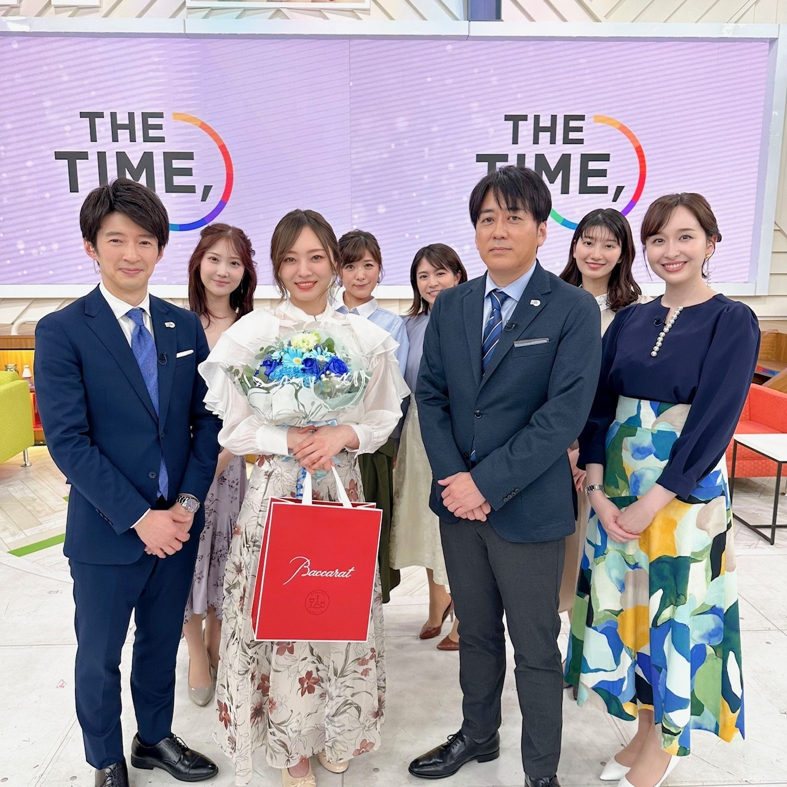
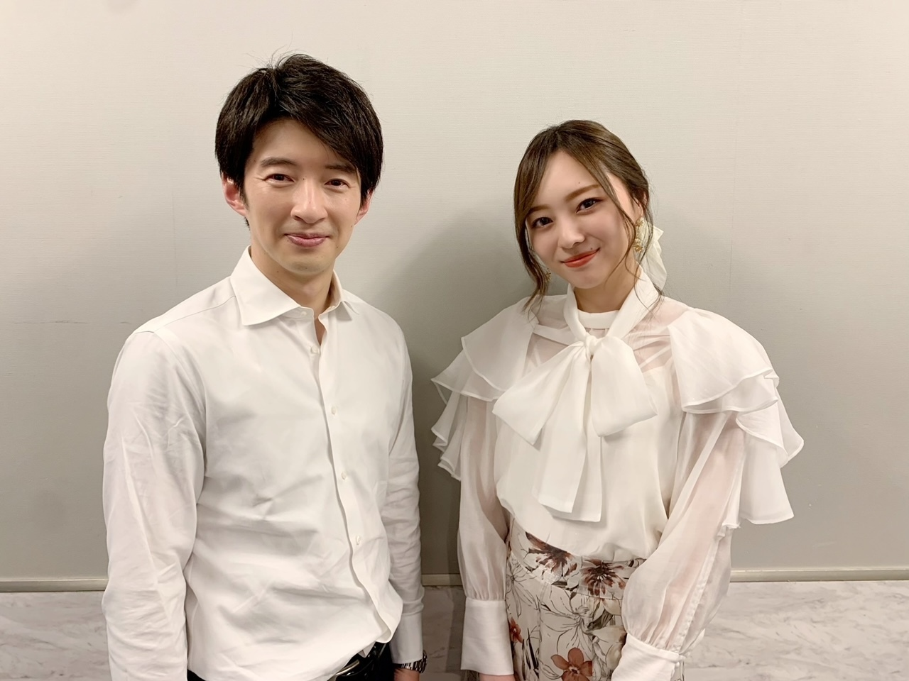
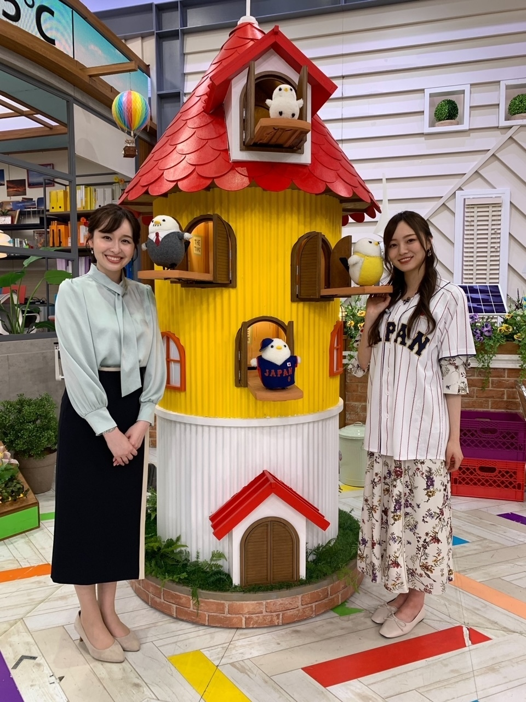
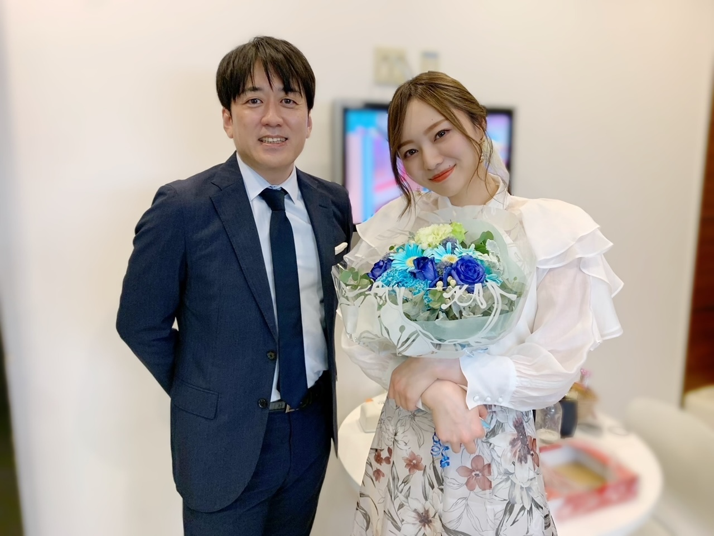

朝の過ごし方
約１年半努めさせていただきました、
TBS系「THE TIME,」月曜日レギュラーを
卒業致しました。

事前になんのお知らせもなく
観て下さった方には、びっくりさせてしまったかもしれません。
番組開始の立ち上げから約１年半、
とても濃く、あっという間な日々でした。
私にとってTHE TIME,は
新しく自分の核となるもの、
軸になるような存在でした。
なにかあれば、
私には THE TIME,がある！と思える。
それがどれだけ心強く
自分の心をピシッと正して自信を持って、真っ直ぐいられたか。
この番組で出逢った方々は
お仕事をする上で
私はこうありたい、きっとこうあるべきなんだ、と
そう思わせてくれる方たちばかりでした。
新しい世界を私は知ったわけですが、
どの時間帯に会っても皆さんいつも笑顔！
温かく迎えてくださる週の初めの月曜日が、
緊張と不安を抱いていた当初から
だんだんと楽しみに変わっていきました。
朝の番組。
私ができることはまず笑顔がキーになると思っていて、
番組当初はとにかく笑顔！と
自分に言い聞かせていましたが、
緊張して強ばるわたしの顔を緩めてくれたのは
朝お会いするスタッフの皆さん、そして
スタジオで一緒に番組を作る出演者の皆さんの笑顔のおかげでした。
情報番組、何があるか分からない生放送の中で
常に和やかに、そして時にピリッと、
この番組へと熱を注ぐTHE TIME,チームの皆様を、心から尊敬していました。
特にこの１年半、
乃木坂として活動する中でも
立場が変わったり、環境の変化があったり、
自分の中でも大きな変化があった激動の日々だったわけですが
そんな中でTHE TIME,を通して
一番早く、生の声で、自分の言葉で皆様へ気持ちを伝える時間を設けて下さったことが
何より有難かったです。
番組の立ち上げを、スタートから関わらせていただくなんて機会は
この先もそう無い経験だと思います。
初回放送の２０２１年１０月１日のあの日は
今でも鮮明に覚えています。
宝物の日々でした！
幸せだった！
少し距離は遠くなりますが
気持ちはずっとTHE TIME,チームの一員ですし
これからは一ファンとして、番組を応援していきたいと思っています。
来週からは
一ノ瀬 美空 ちゃんに月曜レギュラーをバトンタッチします。
笑顔が素敵で愛嬌があって、
でも真面目でガッツがある子だと思っているので
きっと大丈夫、月曜の朝を華やかにしてくれるはずです！
何かあれば力になるし、
この大きなチャンスを楽しんで頑張ってもらいたいです。
皆様、引き続き 「THE TIME,」を、そして
新レギュラーの一ノ瀬 美空を
よろしくお願い致します！



皆さんとご一緒できて、
心から幸せでした。
皆様がかけて下さった言葉を胸に
今後の活動を励んで参ります。
そしていつか
安住さんにインタビューしてもらえるくらい、大きな人になります！
本当にありがとうございました。
Original：https://www.nogizaka46.com/s/n46/diary/detail/101329?ima=4932&cd=MEMBER